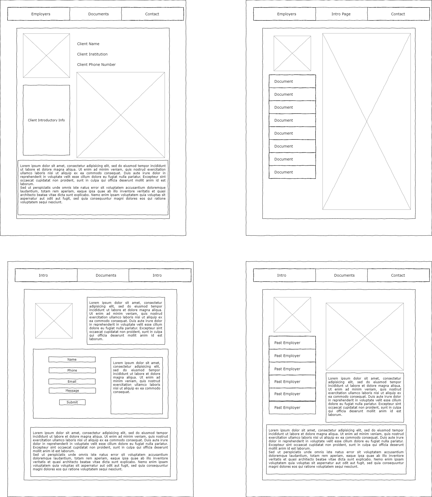
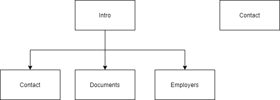

Project Assignment A
- Project Overview
- Application is a portfolio intended for an engineering student to showcase his projects and work experience to potential employers
- Intended users include but aren’t limited to; Client, Future Employers, Scouting Agencies, and Business Partners.
- The website will have a plethora of information about the client, including resumes, certifications, and projects. It will include photos of said projects as well as tabs to switch between all of the information.
- Client Information
- Simon Jenkins
- The University of North Carolina at Charlotte
- sjenki50@uncc.edu
- (704)288-6105
- Wireframe
-

- Site Map
-

- Page Design
- Introductory Page
- Purpose: Serve as an about, generalizing the important smaller information found throughout the rest of the site onto a singular spot, relevant to employers just skimming the site
- Audience: All Intended Users
- Content: Information about the client, a blurb about history, as well as links to further information
- Not the page for user data entry
- Page includes links to other pages, serving as an entryway, when links are clicked they are transferred to other pages.
- Upload Page
- Purpose: Provide functionality to users by having a site accessible to only them that allows for them to upload their information to the rest of the site
- Audience: The client only
- Content: Vector for information upload, has a form that allows for document upload, as well as links to the rest of the site
- A page for client data entry
- Page includes upload forms that allow for document entry or modular changes to the Documents or Links pages
- Documents/Accomplishments Page
- Purpose: Showcasing of all documents and accomplishments in one area
- Audience: All Intended Users
- Content: Primarily documents, as well as tabs to switch between these documents. Links to the other websites as well.
- No user entry
- Page includes subfiles that showcase pdfs or relevant do files in the browser
- Past Employments/Links Page
- Purpose: shows past employers, as well as links, including to their websites. Doubles as a showcase of what tasks the client performed at the place of employment.
- Audience: All Intended Users
- Content: Hyperlinks and text talking about past experiences.
- No user entry
- Tabs switching between places of employment or possibly a timeline showing time progression
- Contact Page
- Purpose: Is the central page for employers to contact the client. Includes contact information about the client.
- Audience: Primarily future employers and scouting agencies
- Content: Listing of contact information, and forms for users to enter in their contact info, or potentially send an email straight from in website
- User Entry
- Dynamic Functionality
- Tab System that allows users to easily switch between relevant information, utilizing forms and buttons on the main page. Utilized on Past Employments and Documents pages.
Ryan Stepp : ITIS3135
Intro to Project Assignment
{kind=link}
{kind=link}